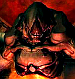

Forums galactiques > Taverne galactique : lieu de discussion informel > sa suffit ! !
-25 ou moins | 4 | |
-30 | 1 | |
-35 | 2 | |
-40 | 4 | |
-45 | 1 | |
-50 | 10 | |
-55 | 0 | |
-60 | 4 | |
-75 | 1 | |
-80 ou plus | 27 | |
Total : 54 vote(s) | ||
khornes 03/12 ETU 11:15 | Encore une chose commandant Péricles:quand on veut faire taire des commandants parcequ'ils font des fautes d'orthographes,et que l'on organise un vote pour cela alors il vaut mieux ne pas faire de fautes ne serait ce que sur le titre du topic("sa" suffit). on dit "ça" ou "cela". |
Péricles 03/12 ETU 11:19 | Je n'ai jamais dis avoir un grand orthographe et cette faute je l'ai vue depuis longtemps seulement on ne peut éditer le nom d'un topic. Et qd je ferais des interventions a l'AG je ferais beaucoup plus atention en me relisant 3 voir 4 fois avant de poster et le relir une derniere fois encor |
Uplor03/12 ETU 11:52  | Je n'aurais voté que s'il y avait "aucune limite". Le fait que quelqu'un ait un score très négatif lui fait juste perdre de l'influence quand il poste, rien de plus. Ce serait vraiment pas simpa d'interdire, surtout qu'il y a toujours moyen de remonter en faisant des efforts. |
cortana 04/12 ETU 00:01 | Je viens de lire le topique et j'ai vu que le créateur a déjà une faute fort grave et facile a corriger Efor=Effort Et oui simple a corrigé mais manque d'attention Je propose donc que l'on t'interdise de parler Comme sa tu sera quitte avec le commandant jsboys Sa ne te convient pas?? Moi non plus alors arête de délire mon pauvre si on n'a plus le droit de s'exprime on ne peut remonter crétin profond. |
abbadon 04/12 ETU 07:39 | y a pas une reponse je n'en sait rien |
| Asuryan  04/12 ETU 10:24 | Chers commandants, je me permets de prendre la parole sur ce sujet si délicat, Je pense très honnêtement que le commandant Péricles a raison de mettre à jour un problème d'une si grande importance. Pourquoi? Car si j'ai bien tout compris, l'assemblée Galactique, c'est une assemblée officielle où toutes les nations se retrouvent par le biais de leurs chefs. Avez vous déjà vu des présidents de la république, des ministres, ou même des députés faire de vulgaires fautes de syntaxe? Ces cas sont extrêmement rares... Et pourquoi sont-ils rares? Tout simplement car leurs discours sont préparés affinés et retravaillés. Il ne sont pas écris à la "va vite" en moins de trente secondes, sans même avoir pris le temps de se relire... Chers commandants, il existe un moyen tout bête qui s'appelle Microsoft Word. Ce système peut vous aidé à corriger toutes les fautes bêtes, et ainsi rendre vos discours plus attractifs, plus lisibles, et donc plus sympathiques. Enfin pour ce qui est de la taverne, je crois qu'il faut qu'on s'imagine tous dans une salle, en train de boire, de chanter de rigoler, de parler de tout et de rien... Dans ce contexte, les fautes d'orthographes sont bien évidemment tolérées. Voilà, je tenais à vous faire part de ce que je pense, et j'espère que ce message servira à quelque chose... |
dieu 04/12 ETU 10:42 | Dieu n'a rien à rajouter par rapport au dernier message ! ^^ Une brève description sur chaque forum en ce sens devrait apparaître d'ici peu... Enfin, je rappelle que pour tout ce qui est HRP, c'est mieux d'aller sur le forum externe, et vous engage vivement à vous y inscrire et à y participer... |
Péricles04/12 ETU 11:44 | Le commandant Asuryan a parfaitement résumé ce que je voulais exprimer avec quelques détailles en moins. |
Péricles04/12 ETU 12:38 | Ne me dîtes pas qu'il y a un effort la deds: "je pense que les ioniqueS devraiENt Être possible de les utiliser car il sont netTement moinS puissantS que les B HA. et ilS ne visent qu'un point. ilS sont exCelLent pour fermer un system. et sinon je pense qu'il est bien" Extrait de cortana toutes lettres majuscule signifient une faute corrigé et j'ai du en oublier. Ne me dîtes pas qu'il a mi 30mn pour écrire ce message. J'annonce ma moyenne de français actuel qui ne dépasse pas les 7/20. Je fais un effort tel que je ne ferais jamais de fautes aussi grossières sur l'AG (ou bien 1 en 10msg). Une seul relecture aurait évité tant de fautes. encore? "oui mais si vous penser" on sait tous qu'avec la 2eme personnes du pluriel la terminaison et -ER PS: je n'ai rien contre cortana |
djrems 06/12 ETU 21:17 | ***Assis au fond du bar un homme vétu d'un uniforme de la marine est assis dans une alcove. Sur la table en bois face à lui un verre aux reflets rouges et verts semble deja à moitié vidé, l'homme regarde le commandant Péricles en écoutant son discourt. Puis prend la parole. Sur son Identibadge placé en dessous des décoration de la marine vous pouvez percevoir son nom: Amiral Djrems*** Le baton ou la formation... Il me semble que feu Péricles, des légendes antiques humaines, se posait la même question, bien des millénaires avant que vous ne veniez à la galaxie. Au lieu de crier alors que je bois tranquillement mon Kloug commandant, ne pouriez vous pas aider ces jeunes ? Alors laissez nous boire en paix ! Agissez ou taisez vous, mais ne rejetez pas les fautes la ou vous n'avez aucunes solutions. ***L'Amiral Djrems prend son verre à la main et d'un geste avec celui ci salut le Commandant Péricles *** |
Péricles08/12 ETU 19:19 | Comment voulez vous que je les aide ? Que je leur face des cours de français de base ? Alors que moi même je ne maîtrise pas très correctement orthographe ? Je veux surtout dire que mise à par quelques mal chanceux, dans une famille il y a bien quelqu'un parlant correctement: le père le frère ou la soeur. Pour ceux qui viennent d'autres pays, cela je n'ai rien à leur dire alors veuillez m'excuser si cela est le cas pour tout ceux à qui j'ai pu dire qu'il pourrait bien faire un effort. PS: ZEUS un effort est possible qd je peux lire ceci ma prof de français le tuerait: "les commendante" ; "je le dit" les commandantes ; je le dis |
bis31 08/12 ETU 19:58 | déjà ces commandants masculin / féminin ^^ commandantes n'existe pas :P |
Péricles08/12 ETU 20:34 | lol bon vous avez compris la faute que je voulais montrer Lol |
Grosalen 08/12 ETU 22:13 | Je pense que ce topic est une vaste blague. Périclès ne peut pas sincèrement attaquer des commandants sur leur orthographe, ce n'est pas possible, rien que le titre du topic est parlant... Enfin, bravo c'est très drôle... |
Arhain 09/12 ETU 00:47 | Tiens, je ne suis pas le seul à être plié en deux devant ce topic ? Quel hasard ! Mais il parait qu'il fait bien les choses... |
Péricles11/12 ETU 10:02 | et alors, je demande juste un effort tsss... |
Grosalen11/12 ETU 15:15 | Par contre il est à noter que le commandant Périclès ne fait aucune faute à l'AG... ou presque... bravo et merci pour la lisibilité. |
Péricles11/12 ETU 16:32 | Es ce une antiphrase? |
Péricles11/12 ETU 16:50 | Festival ! ! ! S'il y a des prof de français j'avertis: RESTEZ ZEN ! Alerte mes Mécanoïdes de Français sont en surchauffes S.O.S <<La traditionnelle troupe des Insoumis vêtu de noire entra dans l assemblée, Cette fois ci par contre, le Grand Pôpe était bizarement vétu, son traditionnel vêtement noire était désomriais remplacer pour une immense cape de fourure verte, au armoirie des insoumis brodé au fil d'argent, Il tenait en sa main un sceptre, dont l'extremiéte était composé d'une immense émeraude, surmonté par une licorne en éffigie, le tout argenté, Une couronne d'or blanc lui tenait lieu de couvre chef, certi d'inombrable pierre précieuse, Alors, la troupe des hommes noire transportérent un immense trône sur la tribune officielle de l'Assemblée, au arme et symbole des Insoumis, Celui ci appela les mecanoides pour avoire la parole, alor que Gunter commençaient deja a sortir son sabre, celui ci était maitrisé dans sa loge, enfin le grand Pôpe puis commencer : " Noble Assemblée, Aujourd'hui, contre un procésus démocratique qui m'est pourtant chére, Je me doit contraint de déclaré l'avénement du Consulat Galactique. Cette nomination inatendu pour vous est du a l'impossibilité d'engager quelconque pour parler avec les traitre au Exilé, De ce fait, la consulat vas être organiser des les prochaine heure, et ses membre vous seront divulguer trés prochainement, Fidéle a la réprésentation des divers partie de la galaxie dans cette guerre, seront nommé consul un Exilé, un Insoumis ainsi qu'un traitre, que je leur laisse élir eux même, une fois de plus pour montrer ma bonne fois, Cependant, le consulat ne sera que transitoire, le temps que la paix soit ramener dans le systéme 0, et que la brigade internationnal soit démenteler, et ses chef "soumis aux Insoumis". j'en appelle au bon vouloir de vous tous, ne croyez pas au idée des traitre, ne voyez pas en moi le tyran qu'ils souhaiteraient anéantir pour leur gloire personnel, Seul j ai eu le courage de lutter contre le ouvernement qui les avaient deja tous corrompu par des transfert important en leem et arme, la constitution temporaire du consulat vous sera bientot proposé, mais deja les decision de la galaxie seront prise de la maniére suivante, chacun des consuls auront une voix lors des conseil, exepté mo-même, 1er Consul en ayant deux afin d'eviter toute égalité nous amenant a des lenteur administrative, Croyez au Consulat, Coryez en notre future galaxie, pacifié, et purgé de tous ces traitre, pensez en votre bonheur future, ou la liberté d'entreprendre pronnera sur tout!!!! Croyez en vous!!! Pour la deuxiéme chance, le grand Pôpe, 1er Consul galactique!!!>> |
Absurd_Jedi 11/12 ETU 17:03 | Hé, m'sieur Périclès... on a vu ça sur tous les écrans de l'Assemblée, et nous avons tous subi ce discours débordant de fautes diverses. Pas la peine d'enfoncer le clou en nous le ramenant à la taverne! le Grand Pop s'exprime comme un barbare galactique: nous le savons. Il déclame ses textes au mépris des règles les plus élémentaires de grammaire, conjugaison, syntaxe et conventions de présentation: nous le savons aussi. Si vous voulez lui taper dessus, faites comme moi: prenez une batte de base-ball et défoulez vous. Pas la peine de venir jouer ici avec des immondices linguisitiques: vous dites vous battre pour la propreté orthographique du lieu, alors évitez de ramener ce genre de trucs ici. May the Absurd Side of Force be with you... |
Forums galactiques > Taverne galactique : lieu de discussion informel > sa suffit ! !